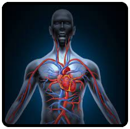

CARDIOVASCULAR
O sistema cardiovascular é responsável pela circulação do sangue, de modo a transportar os nutrientes e o oxigênio por todo o corpo. O Sistema Cardiovascular é formado pelos vasos sanguíneos e o coração.



O sistema cardiovascular é responsável pela circulação do sangue, de modo a transportar os nutrientes e o oxigênio por todo o corpo. O Sistema Cardiovascular é formado pelos vasos sanguíneos e o coração.